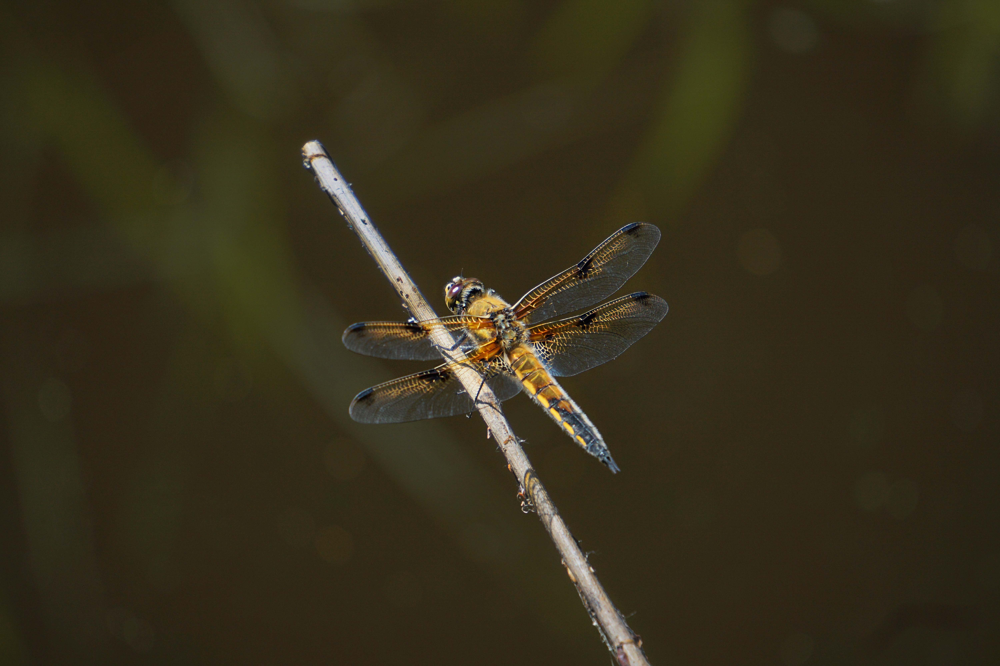
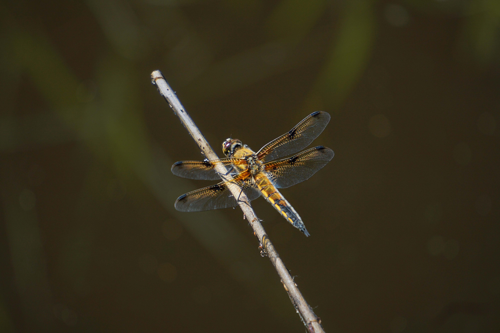

Voor de maandelijkse fotowedstrijd van Natuurmonumenten, foto van de maand, was de opdracht om de natuur op een eigen, creatieve manier vast te leggen. In mijn werk ging ik op zoek naar een perspectief dat je als mens normaal gesproken niet ziet. Door te spelen met scherptediepte, detail en contrast, probeerde ik de kijker op een andere manier naar de natuur te laten kijken. Dichterbij, intiemer en met meer aandacht voor de kleine, vaak over het hoofd geziene momenten.
 
